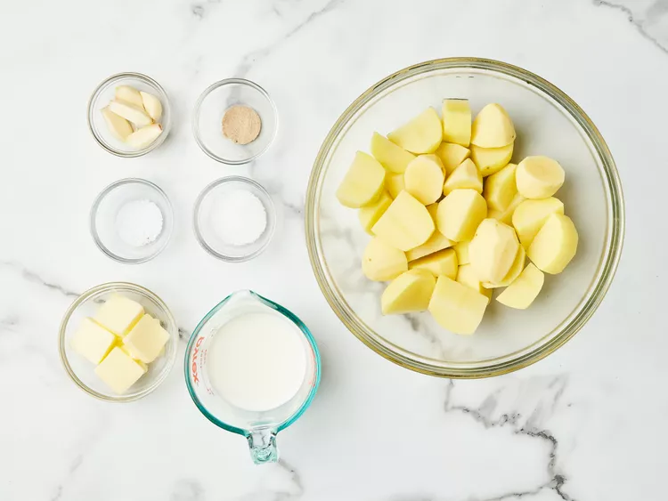

Garlic Mashed Potatoes
Description
Garlic mashed potatoes are the perfect side dish for many different meals. From
meats to stews, it's hard to go wrong with garlic mashed potatoes, and, unlike
regular mashed potatoes, garlic mashed potatoes are delicious without any gravy
(though you may still add some to further enhance the flavor if you desire.)
This recipe takes just under half an hour to make and serves six. It's so simple
that it only utilizes four ingredients with some additional common seasonings.
Cleanup should also be easy as this recipe only utilizes one large saucepan
along with whatever measuring vessels and utensils you use.
You're gonna boil the potatoes and garlic, drain them, mash them, and fold in the
remaining ingredients. Follow the step-by-step recipe below for detailed instructions. You got this.
Ingredients (6 servings)
- 2 pounds of Yukon gold potatoes, peeled and cut into 11⁄2 inch pieces
- 5 large garlic cloves, peeled and smashed
- 1 tablespoon kosher salt
- 1⁄3 cup unslated butter, cut into 8 pieces, plus some additional for serving
- 3⁄4 cup whole milk
- 1 additional tablespoon of kosher salt
- 1⁄4 teaspoon ground white pepper
Steps
-
Gather all ingredients.

-
Combine potatoes, garlic, and 1 tablespoon of the salt in a medium saucepan with enough water to cover by 1 inch. Bring to a boil over high. Reduce heat to medium-low, and simmer until potatoes are fork-tender, 10 to 12 minutes.
-
Drain potatoes and return to hot saucepan. Stir until dry, about 1 minute.
-
Add butter, 1 piece at a time, stirring gently until melted before the next addition.
-
Using a potato masher, mash in milk until smooth. Stir in 1 teaspoon salt and white pepper.
-
Transfer potatoes to a serving bowl and top with more butter, if desired.